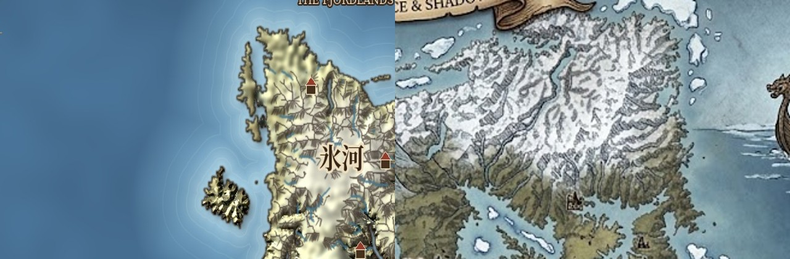
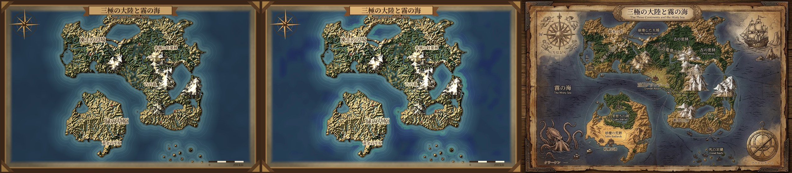
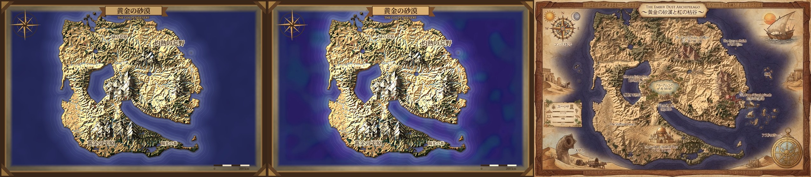

稜線を山の描き方にする+「色彩加算」(プログラム)
概要: ユーザー指示の2つを試しました。(1)稜線の線を山の描き方に変える(稜線を引き、決まった陰の線を片側に付け、稜線の端は消す)。(2)最後に色の配分を整える独立処理「色彩加算」を作る。(1)は世界6の雪原で、Geminiの「稜線に沿った短い平行線」に近い見た目になりました。(2)は独立の部品として動きますが、最初の版は派手な斑点になって失敗し、弱めた版では効果が海にしか見えません。
1. 稜線の描き方(左=今回 / 右=Gemini)

絵番号 E065- 標高から稜線を抜き出し、端を4画素ぶん削って消した(線の連なりが稲妻のように見える)。
- 陰の線は、光の当たらない側(右下向き)の斜面にだけ、長さ一定(9画素)で引いた。
- 量は目で調整した(前回より多く、世界6は線の本数を約6割に間引き)。数字での「Geminiとの量の一致」は測れていない(私の測り方が合わず、不採用)。
- 暗くなりすぎないよう、線の濃さは約85%に抑えた。
2. 色彩加算(独立処理)
決めたこと: 地形とは無関係に、最初に「色の配分表」を決め、仕上がった絵に足りない色を足す。ランドマークや絵を置いた後の最後の処理にする。いつでも外せる・変えられるよう、別ファイル(iro_kasan.py)の一つの関数にし、設定は表(iro_presets.json)に出した。呼ばなければ何も起きない。
- 色の区分: 白・クリーム/灰/暗い/赤茶/金・黄土/オリーブ/緑/青緑/青/紫の10区分。
- 配分表: 今回は世界5・6・7それぞれのGeminiの絵から、地図の中身の色の割合を測って表にした(「何色に寄った地図か」の見本)。
- 足し方: 表より足りない色について、余っている色の所を、ゆるやかな斑(地形と無関係)で、色相を少しだけ近づける。暗くならないよう、明るさは表の値まで持ち上げる(最大1.12倍)。
全体(左=色彩加算なし / 中=あり / 右=Gemini)

絵番号 E066 絵番号 E067
絵番号 E067
絵番号 E068目で見た評価(私の印象。判断はユーザーに)
- 稜線: 前回の「枝分かれの木」より、短い線が稜線に並ぶ見た目になり、Geminiに近づいた。世界5・7の山の線は、まだ小さい。
- 色彩加算の最初の版は失敗: 紫と緑の濃い斑点が海に出て、派手で不自然になった。
- 弱めた版: 派手さは消えたが、効果はほとんど海の色むらにしか出ない(海が地図の大半のため)。陸の色の足し(金・オリーブ・赤茶)はほとんど効いていない。世界6は色の配分が表に近づいた(差0.36→0.20)が、世界5は離れた(0.36→0.53)、世界7は小さく近づいた(0.64→0.56)。
限界・未確認
- 3枚の目視と、色の区分の割合のみ。区分(10個)と境目は私が決めた。
- 配分表は各世界のGeminiの絵そのままで、まだ「寄り方ごとの表」にはしていない(他の参考絵は未使用)。
- 色彩加算の効きが海に偏る件は未解決(海と陸を別の表にする案がある)。
- 線の量は目で決めた値。世界5・7の山の線は拡大して確かめていない。
コード: ridge2_gen.py(稜線の描き方)/iro_kasan.py(色彩加算)/iro_presets.json(配分表)/gstyle8_gen.py。